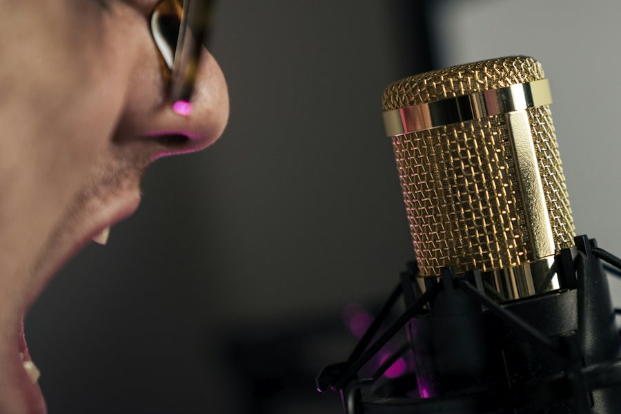
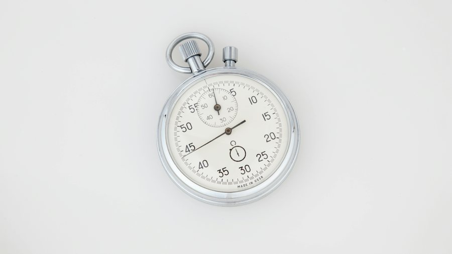

Ficha de sesión · S16 · solo docente
| § | Bloque | Min |
|---|---|---|
| 1 | Look-alike words · bet first, then say it | 5 |
| 2 | Quiz 2 · Sentence Auction 8 · Decide and say 6 · Read to decide 6 | 20 |
| 3 | Oral checkpoint · Take 1 7 · feedback 3 · Take 2 6 · 12 preguntas 6 · antes y ahora 3 | 25 |
| 4 | Wrap-up · exit + self-check | 10 |
| Total | 60 |
Warm-up · Look-alike words
1. Read what you want to say in Spanish. 2. Bet first: 1, 2 or 3 chips. 3. Lock the bet and see two English messages. 4. Pick one. 5. Say the right one out loud. Chips count after you say it.
Teacher notes · §1 Warm-up
Pedagógica
- The Cognate Trap (APUESTA): 5 tarjetas con una frase en español; el alumno APUESTA antes de ver las opciones (1–3 fichas) y después elige entre dos mensajes completos en inglés: uno natural y uno con calco del español (assist/attend, actually/currently, agenda/calendar, support/stand, term/deadline). No hay huecos: se decide y se dice. Las fichas se liquidan solo cuando dice el mensaje correcto en voz alta.
- Máx. 5 min. 30 s en silencio al inicio y luego habla. Pregunta de «minuto 1» para comparar al final (§3): no corrijas todavía.
- Grupo: una tarjeta por persona. 1:1: pide una segunda frase propia con la palabra correcta.
Engagement
- Escalación (vuelve de S8): se apuesta ANTES de ver las opciones y hay que decir el mensaje; ya no basta con marcar trampa o seguro.
- Cierra en voz alta: «We have __ chips and said __ messages.»
Crecimiento
- Anota qué calco cae más: material para el Bounty del cierre.
- Pregunta de minuto 1 para la comparación «antes y ahora».
Quiz 2 · Auction · Decide and say · Read to decide

Keep it or reject it? Bid, then repair it out loud.
Coins 100 · Judged 0 / 8 · Repairs said 01. Read the message. 2. Bid 10, 20 or 30 coins. 3. KEEP it or REJECT it. 4. If you rejected it, say the repair first, then show the correct version.
Choose the message that does the job. Then say it.
Read the message. What do you do? Then say your answer.
Teacher notes · §2 Quiz 2
Pedagógica
- Sentence Auction (SUBASTA, 8 min): 8 mensajes de S9–S15 (4 correctos, 4 con el error típico). Apuesta 10/20/30 y KEEP / REJECT. Si rechaza, REPARA EN VOZ ALTA primero y solo después muestra la versión correcta (escalación: antes se veía el modelo). Si conserva, dice un mensaje nuevo con el mismo patrón y otro dato.
- Decide and say (6 min): 6 mensajes completos por punto de lengua; elige el que logra el objetivo y lo dice. Cero huecos.
- Read to decide (6 min): tres mensajes breves; una sola decisión de idea general por mensaje (responder / pasarlo / nada que hacer) y luego dice su respuesta. Sin preguntas de detalle literal.
- Puntaje /17 (A 8 + B 6 + C 3). Aprobado ≥12. Declara el puntaje en voz alta y elige la parte más débil para repetir.
Engagement
- Quiz de 4 etapas 5/20/25/10. El puntaje solo cuenta lengua decidida y dicha.
- Cierra en voz alta: «We finished Quiz 2 with __ points.»
Crecimiento
- Registra la parte más débil (A, B o C) y repítela al inicio de S17.
- La mezcla S9–S15 es la evidencia de Block 2.
Checkpoint 2 · Beat your record

Pine Street Community Center changed its open day. Ask for the missing details, say what changed, say who does what and by when, and close the plan.
Six things to do: ask · changed · who · when · need · close. Your record is how many you do without notes.
Group: pairs. One speaks, the partner holds the partner card and ticks the six items.
1:1: you speak, the teacher holds the partner card and ticks the six items.
Pine Street Community Center · open day (fictional)
The open day has changed. They have moved it from Saturday to Sunday.
Chairs: Ana is responsible. Due by Friday.
Signs: Beto is responsible. Due by ???
Start time: ???
Signs: due by Thursday. Start time: 10 o’clock. They need us to be there at nine.
30 seconds in silence. Then speak without notes.
Record — / 6 · S8 record on this device —
Keep one thing. Fix one thing.
Choose one item in each list.
Dani calls: “The chairs have changed. Carla is now responsible, due by Thursday. Ana does not need to bring them.” Update your plan and say it all again.
Same question as minute 1
A colleague sends an update and you are not sure about one detail. What do you say? Say it again now.
Choose what is better than minute 1.
12 questions · always 2 follow-ups

Teacher notes · §3 Checkpoint
Pedagógica
- Personal Record (CONTRARRELOJ, 25 min): Take 1 (7 min): 30 s de preparación en silencio y luego habla sin notas con cronómetro; la pareja (o el maestro en 1:1) sostiene la tarjeta con los datos faltantes y marca los 6 elementos. El alumno DEBE pedir los datos antes de ver la tarjeta del compañero. Feedback (3 min): conserva uno, mejora uno. Take 2 (6 min): condición nueva (cambia un responsable). Preguntas (6 min) y «antes y ahora» (3 min).
- Récord y comparación con S8 solo en este dispositivo (localStorage con try/catch). El récord se guarda solo si al menos una toma tiene un elemento marcado y el cronómetro se usó.
- Errores previstos: «Could you to confirm», «responsible of», «in Thursday», «They need that we». No interrumpas durante la toma; corrige después.
Engagement
- Escalación (vuelve de S8): la toma 2 trae una condición nueva y el contenido es un escenario nuevo, no el mismo guion. Rescate visible: Could you confirm…? / X is responsible for… / So, the plan is to…
- Anuncia: «Take 1: __ of 6. Take 2: __ of 6. Record: __.»
Crecimiento
- Registra el elemento más débil (de los 6) para S17.
- Guarda el récord de S16 en la ficha del alumno.
Wrap-up · Better the second time
✓ Success
↑ Upgrade
✎ Repair
↻ Next use
Use Just to confirm in one real message this week.
60 seconds · 5 questions
Today I can…
You finished Block 2: you can check, confirm and close.
Homework: write ONE real message with Just to confirm and one with a deadline (due by), and say both out loud to one person. Next: Session 17.
Teacher notes · §4 Wrap-up
Pedagógica
- Máx. 2 aciertos y 3 correcciones de alto valor con errores reales sin nombres.
- Tarea: dos mensajes reales (Just to confirm + due by) dichos a una persona. Se revisa al inicio de S17.
Engagement
- Declaración final: «Today I finished Quiz 2 and Checkpoint 2.»
- Compara con el minuto 1: «Minute 1 you asked a question. Minute 58 you gave an update.»
Crecimiento
- Registra puntaje /17, tomas 1 y 2, récord y parte más débil.
- «Next session: Session 17, Block 3 · Respond.»